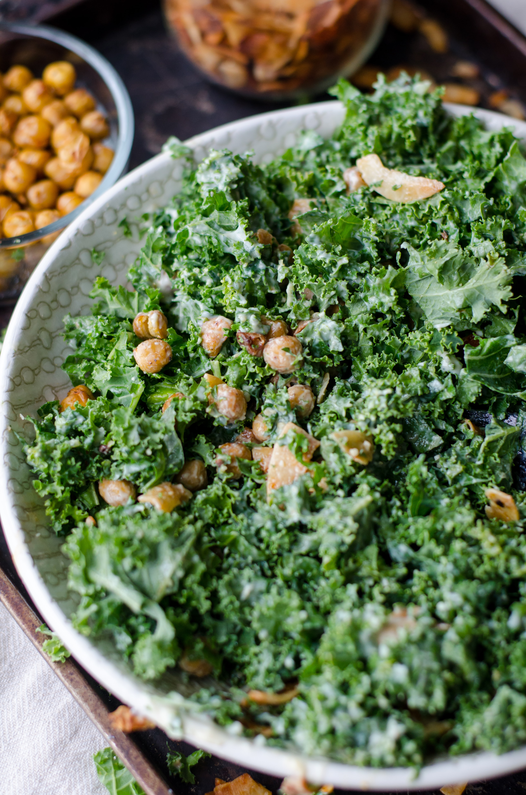
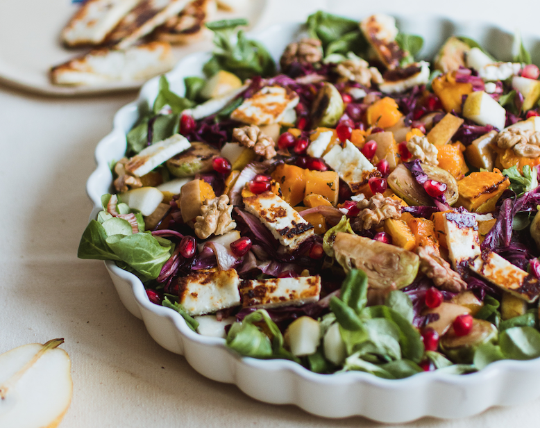

Delicious and easy Salad dressings
Every great salad starts with a great dressing
Tahini Salad Dressing
- 60ml Tahini
- 2 Tbsp freshly squezed Lemon juice
- 1 Tbsp Maple Syrup
- 1 Tbsp Rice Vinegar
- 1 Tbsp Toasted Sesame Oil
- 1 crushed garlic clove
- 2 Tbsp water
- Pinch of Salt and Pepper
- 1/2 tsp chilli powder (optional)
- 1/2 tsp cumin (optional)
Vegan Caesar Dressing
- 2 tsp dijon mustard
- 1 tsp lemon zest
- 2 Tbsp Vegan Mayonaise
- 2-3 Tbsp lemon juice
- 2 tsp finely chopped capers
- 3 cloves crushed garlic
- 1-2 Tbsp olive oil
- 1 tsp Lea & Perrins Worcester Sauce
- Generous pinch of salt and pepper
- 1-2 tsp maple syrup (optional)

